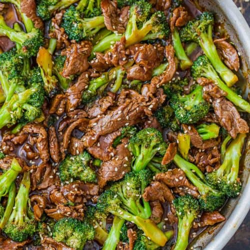

Chicken Alfredo

Description
An Italian sauce that is usually combined with fettuccine noodles and is referred to as fettuccine Alfredo.
The sauce consists of heavy cream or half and half that is mixed with butter, grated Parmesan
cheese, pepper, and occasionally nutmeg to create a rich Italian meal.
Ingredients
- 2 tbps. extra virgin olive oil
- 2 boneless skinless chicken breasts
- Kosjer salt
- Freshly ground black pepper
- 1.5 cups whole milk
- 1.5 cups low-sodium chicken broth
- 2 minced cloves of garlic
- 8 oz. fettuccin
- 0.5 cup heavy cream
- 1 cup freshly grated parmesan
- Freshly chopped parsley, for garnish
Steps
- In a large skillet over medium-high heat, heat oil. Add chicken and season with salt and pepper. Cook until golden and cooked through, 8 min. per side. Let rest 10 minutes, then slice.
- Add milk, broth, and garlic to skillet. Season with salt and pepper and bring to a simmer. Add fettuccine, stirring frequently for about 3 minutes. Let cook until al dente, 8 minutes more.
- Stir in heavy cream and parmesan until combined. Simmer until sauce thikens.
- Remove from heat and stir in sliced chicken. Garnish with parsley
Back to index